Ñuñoa · vidrios, ventanas y termopanel
¿Qué vidrio va?
4,7 con 87 reseñas. Llega con la medida y el uso: el resto se resuelve por WhatsApp.
- 87reseñas en Google
- 4,7de promedio
- 2dominios suyos que no abren solos
- 0páginas propias: la suya vive dentro de sites.google.com
Antes de cotizar
Qué vidrio va en cada cosa
Ventana de casa
float4 a 5 mm
El de siempre. Si da a la calle, conviene laminado.
Puerta ventana
templado8 a 10 mm
Se golpea todos los días: va templado, sí o sí.
Mampara de ducha
templado8 mm
Los agujeros van antes: después no se perfora.
Repisa o estante
templado6 a 8 mm
Depende del largo y del peso que lleve.
Cubierta de mesa
templado8 a 10 mm
Con los cantos pulidos, para que no corte.
Termopanel
doble vidrioa medida
Se mide el marco completo, no el vidrio.
Cómo mandar la medida
- Ancho y alto en centímetros, de marco a marco.
- Una foto del hueco completo, de frente.
- En qué piso y si hay ascensor.
- Para qué es: ventana, ducha, mesa, repisa.
Los espesores son de referencia: los confirma el maestro.
Se corta una vez. Por eso se mide dos.
Qué hacen
Lo que dice su propia página
-
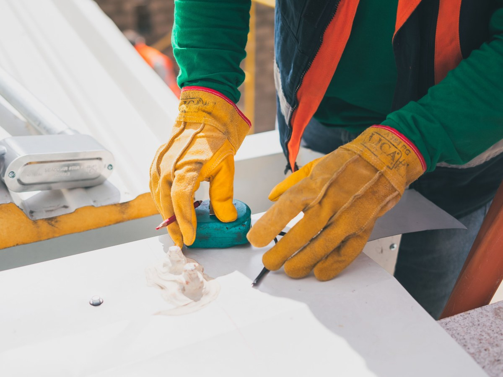
Ventanas
PVC y aluminio
Fabricadas a medida.
-
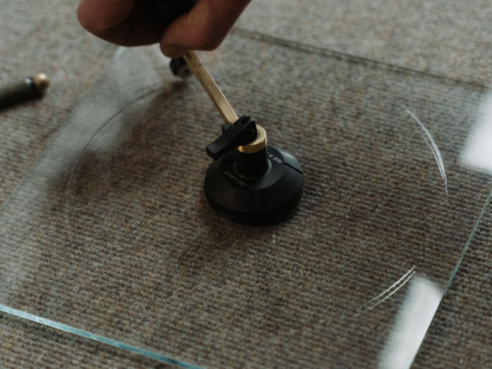
Cambio
De vidrios
Tradicional, laminado y templado.
-
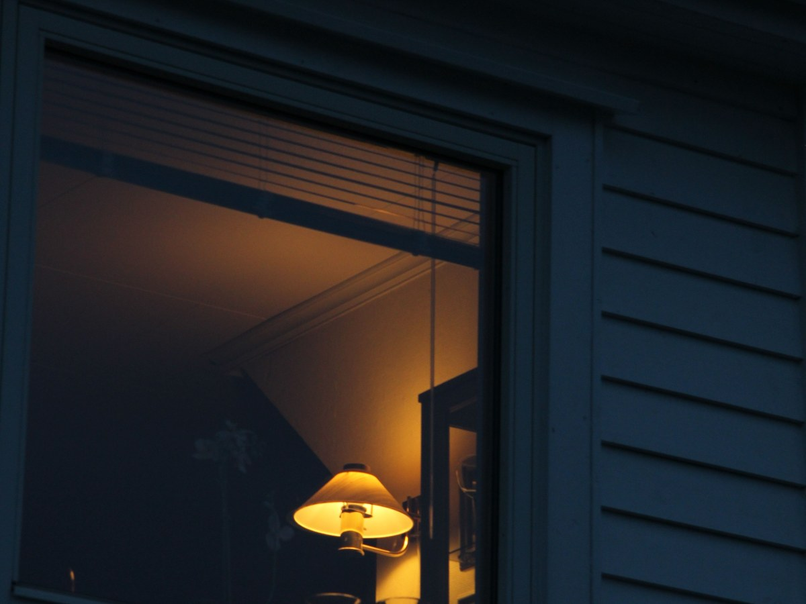
Termopanel
Doble vidrio
Para el frío y el ruido.
-
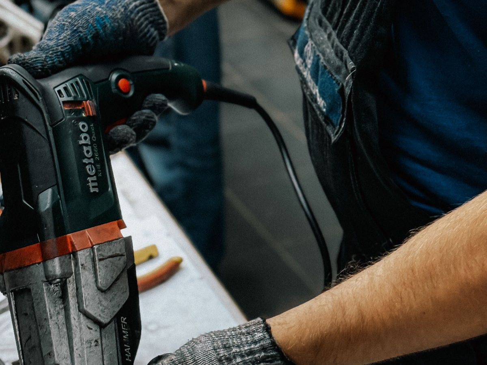
Reparación
Ventanas y puertas
Sin cambiar todo el marco.
-
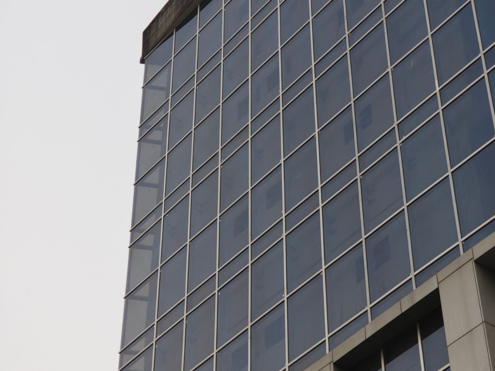
Comercial
Vitrinas y divisiones
También puertas templadas.
-
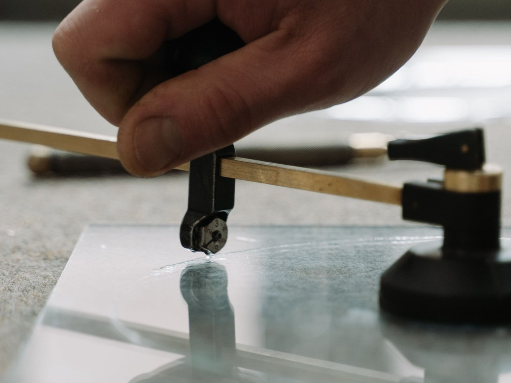
Después
Postventa
Mantención de lo instalado.
Los seis salen de su propia página, la que vive en sites.google.com, al 16-09-2026.
Pagan dos dominios con su nombre y ninguno abre: la página vive prestada.
DNS y navegador, al 16-09-2026
El oficio
Canto, marco y silicona
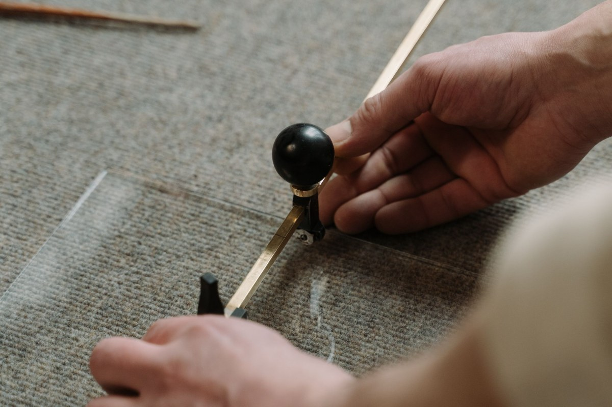
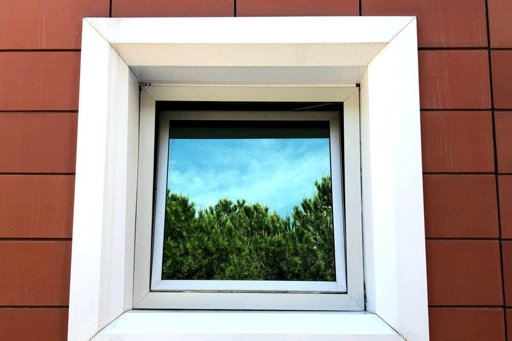
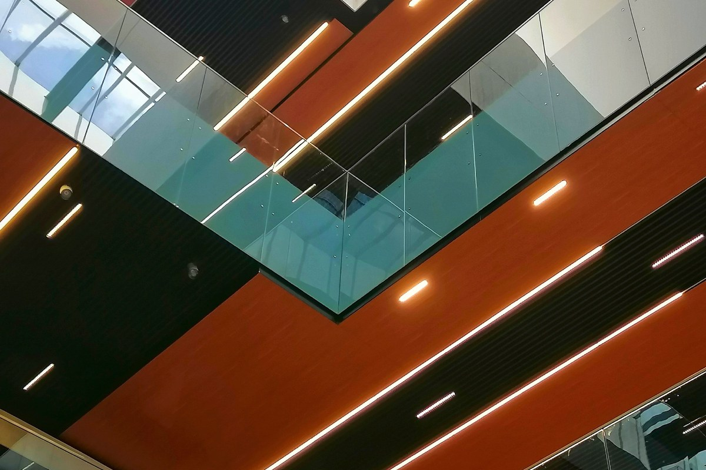
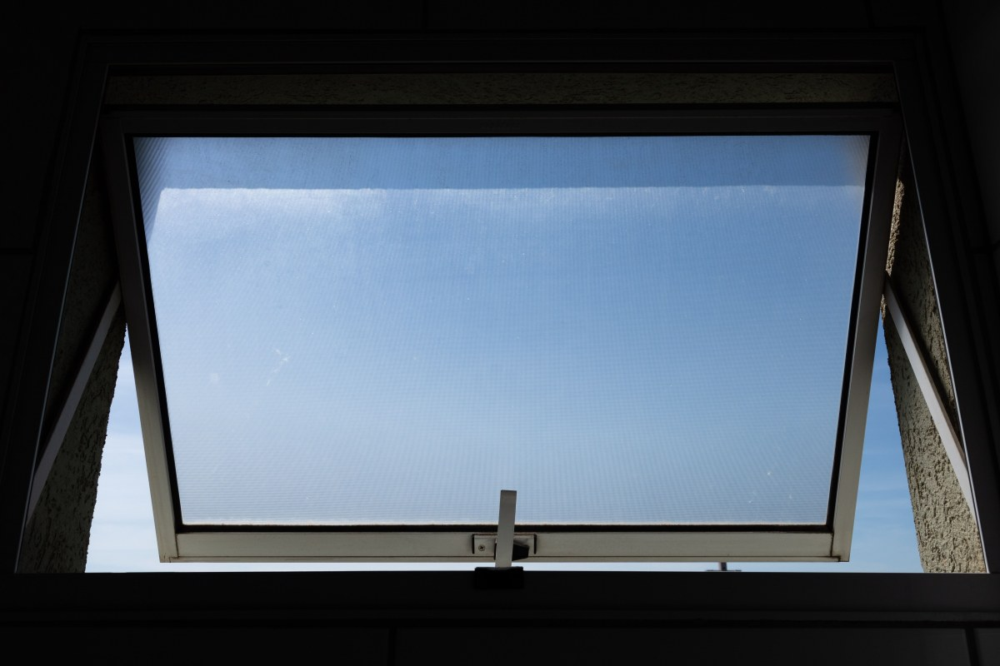
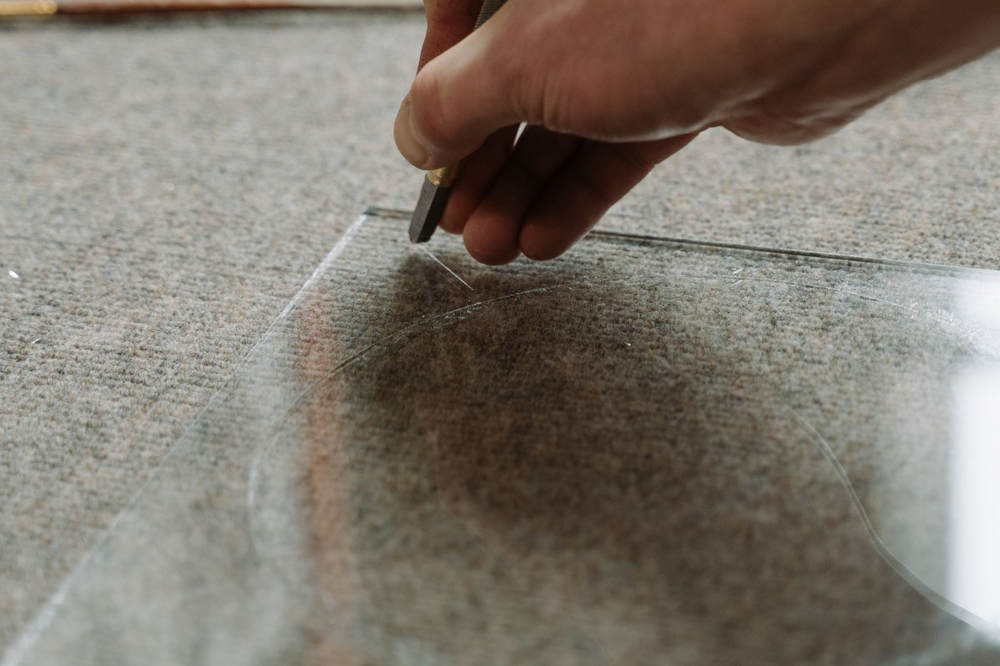
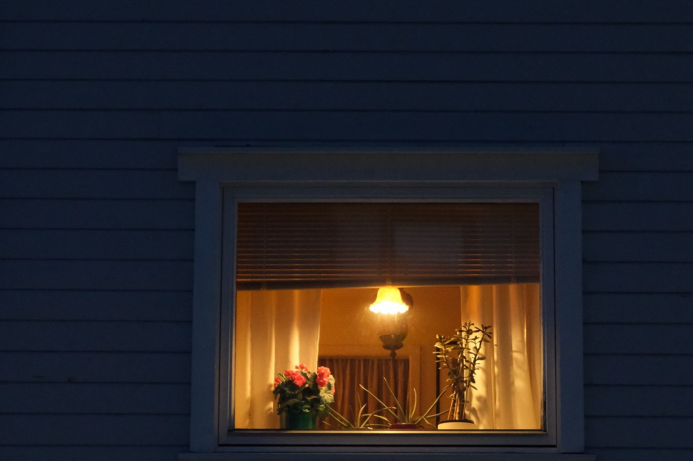
Fotos de referencia: ninguna es de sus trabajos.
Cómo cotizar
Todo por WhatsApp, con la foto y la medida
- +56 9 5687 3194
- Correo
- nathalie.cid@vidriosnunoa.com
- Zona
- Ñuñoa y alrededores
No publican dirección ni horario en ninguna parte: si tienen taller con mesón, ponerlo acá cambia cuánta gente llega.
Para Vidrios Ñuñoa
Qué es real y qué falta
Lo verificado
El WhatsApp, el correo, los servicios de su página y el 4,7 con 87 reseñas. Y que vidriosnunoa.com apunta a Google pero no abre solo, al 16-09-2026.
Lo de ejemplo
Los espesores de la guía, los plazos y todas las fotos.
Lo que falta
Que el dominio que ya pagan abra su propia página, con dirección y horario. Hoy la marca la lleva Google en la URL.